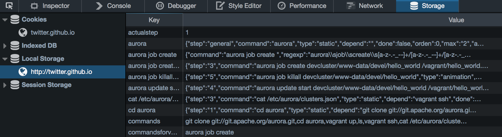
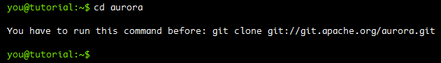
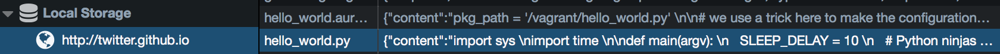
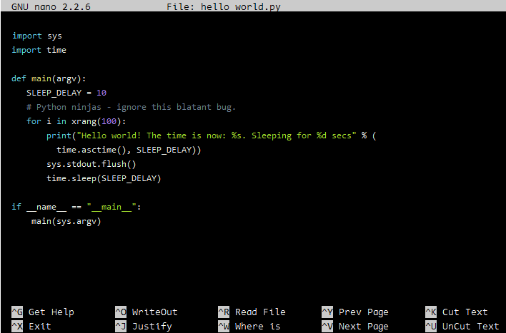

How to it works?
Include jQuery 1.11+
<script type="text/javascript" src="./js/jquery-1.11.3.min.js"></script>
Include Prism.JS for syntax highlighting in nano editor.
<link rel="stylesheet" type="text/css" href="./src/prism.css" />
<script type="text/javascript" src="./js/prism.js"></script>
Include Bootstrap (just choose Grid System)
<link rel="stylesheet" type="text/css" href="./css/bootstrap.min.css" />
Include plugin's code
<link rel="stylesheet" type="text/css" href="./css/cli-guide.css" />
<script type="text/javascript" src="./js/cli-guide.js"></script>
Add a div where which will contain Guide and Terminal
<div id="stepsdiv"></div>
Usage (the plugin needs json file as template)
$('#stepsdiv').cliguide({
nameOfTheProject: 'Apache Aurora'
}).cli({
stepsFile: 'templates/apache_aurora.json',
commandStepsFile: 'templates/apache_aurora_commands.json',
skipsteps: '1,2',
preloadfile: 'templates/apache_aurora_files.json'
});
How to it works the templates?
These json files are use Local Storage for validation of each Step and
update preload files.

stepsFile is a template json where you can add
steps and commands
that user can run
[
{
"step": "1",
"content": {
"title": "Setup: Install Aurora",
"content": [
" You use the Aurora client and web UI to interact with Aurora jobs. ",
" To install it locally, see ",
" <a class=\"link-b\" href=\"http://aurora.apache.org/documentation/latest/vagrant/\" target=\"_blank\">vagrant.md</a> ",
" The remainder of this Tutorial assumes you are running ",
" Aurora using Vagrant. Unless otherwise stated, ",
" all commands are to be run from the root ",
" of the aurora repository clone. "
],
"tips": "let's try with following commands",
"commands": [
{"command":"git clone git://git.apache.org/aurora.git"},
{"command":"cd aurora"},
{"command":"vagrant up"}
]
},
"laststep": false
}
]
In this template can support other features like Modals with content or with image
"content": [
" <a href=\"#modal\" class=\"link-b\">More Info"
],
"moreinfo": [
" <h3>Aurora Configuration</h3> ",
" <p>To run a job on Aurora, you must specify a configuration file that tells Aurora what it needs ",
" to know to schedule the job, what Mesos needs to run the tasks the job is made up of, ",
" and what Thermos needs to run the processes that make up the tasks. This file must have a.aurora suffix. </p> ",
" <p>configuration file defines a collection of objects, along with parameter values for their attributes. ",
" An Aurora configuration file contains the following three types of objects: </p>",
" <ul> ",
" <li>Job</li> ",
" <li>Task</li> ",
" <li>Process</li> ",
" </ul> "
]
"content": [
" <a href=\"#modal\" class=\"modalimage img-b\" data-size=\"b\" data-image=\"./templates/aurora_images/wwwdata.png\">www-data</a> ",
]
commandStepsFile A json template of commands
apache_aurora_commands.json
[
{
"step": "4",
"count": "1",
"commands": [
{
"order" : 2,
"command":"nano hello_world.py",
"type": "nonewline",
"result": [""],
"depend": ""
},
{
"order" : 2,
"command":"aurora update start devcluster/www-data/devel/hello_world /vagrant/hello_world.aurora",
"type": "animation",
"animation": true,
"result": [
" INFO] Starting update for: hello_world
",
" Job update has started.
",
" View your update progress at http://aurora.local:8081/scheduler/www-data/devel/hello_world/5d99e663-8d90-4f7a-9faf-d31f07ee931c "
],
"depend": "nano hello_world.py",
"lastCommand": true
}
]
}
]
For example if multiple commands return the same result. You can do this
"command":["vagrant", "vagrant list-commands"]
Type of command is important because it help to show the result. There are these types
animation (like checklist), static (defualt commands) and
nonewline (it using in git clone after finis show the prompt).
"type": "nonewline",
Depend of a Command
"depend": "git clone git://git.apache.org/aurora.git"

preloadfile It simulates the
preloaded of files. It using Local Storage

[
{
"name":"hello_world.py",
"language": "python",
"content": [
"import sys \n",
"import time \n",
"\n",
"def main(argv): \n",
" SLEEP_DELAY = 10 \n",
" # Python ninjas - ignore this blatant bug. \n",
" for i in xrang(100): \n",
" print(\"Hello world! The time is now: %s. Sleeping for %d secs\" % ( \n",
" time.asctime(), SLEEP_DELAY)) \n",
" sys.stdout.flush() \n",
" time.sleep(SLEEP_DELAY) \n",
"\n",
"if __name__ == \"__main__\": \n",
" main(sys.argv)"
]
}
]
You can see the result in the terminal
Finally you can see the file in nano editor $ nano hello_world.py
